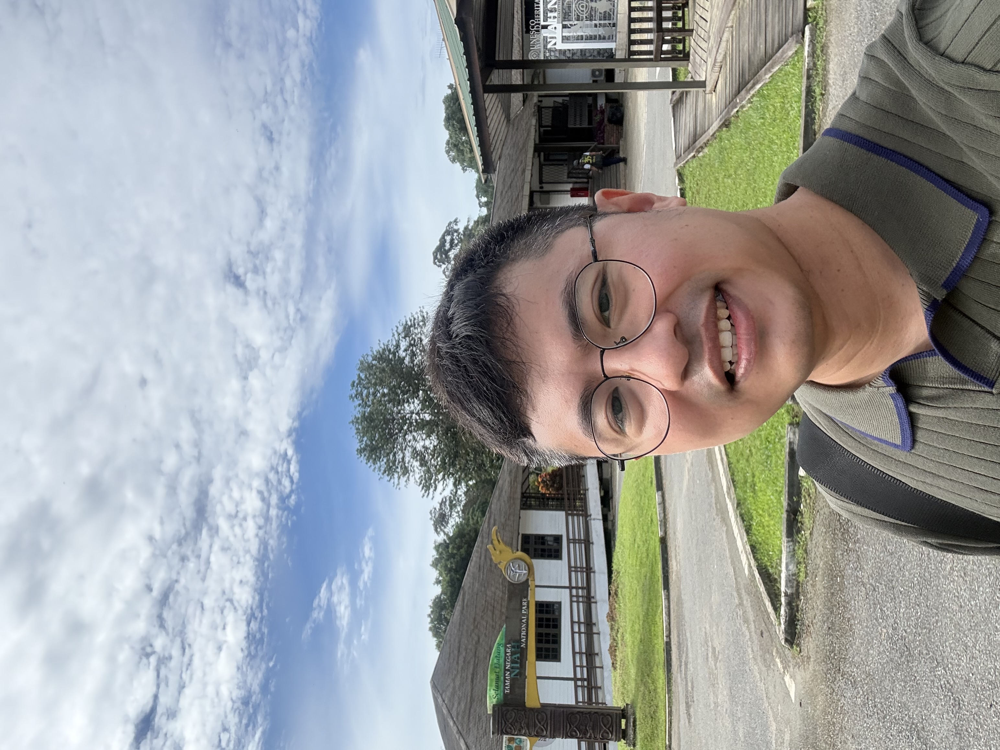

Dr. Naung Latt Htun • Internal Medicine Specialist • MRCP (UK) Exploring the frontiers of AI-assisted scientific research and clinical excellence.
Currently serving as an Internal Medicine Registrar with a focus on digital health integration. My research explores lipid profile alterations in liver cirrhosis and public health risk behaviors in conflict-affected regions.
With over a decade of clinical experience across Myanmar, Brunei, and the Maldives, I've witnessed the gaps in healthcare delivery that only technology can fill.
Mastering the cutting-edge tools that are redefining the modern scientific workflow.
Crafting a professional digital identity to showcase clinical milestones and research through web technologies.
Using 'Vibe Coding' and LLMs to transform raw clinical datasets into structured evidence-based insights.
Accelerating SLR workflows with AI mapping tools to synthesize vast medical databases efficiently.
Developing high-fidelity visual abstracts and clinical diagrams using generative design assistants.
Drafting higher-quality research papers by integrating AI for structural clarity and stylistic refinement.
Automating clinical registry cleanup and complex medical calculations with advanced spreadsheet AI.
Building custom AI agents to handle repetitive research queries and automate clinical data triage.
Tracking my research evolution through practical applications.
Architecture and deployment of this professional academic portfolio.
View DetailsAnalyzing clinical datasets using natural language programming.
Unlocks SoonSynthesizing systematic reviews with AI-assisted discovery.
Unlocks SoonCreating publication-ready assets with DALL-E & Midjourney.
Unlocks Soon